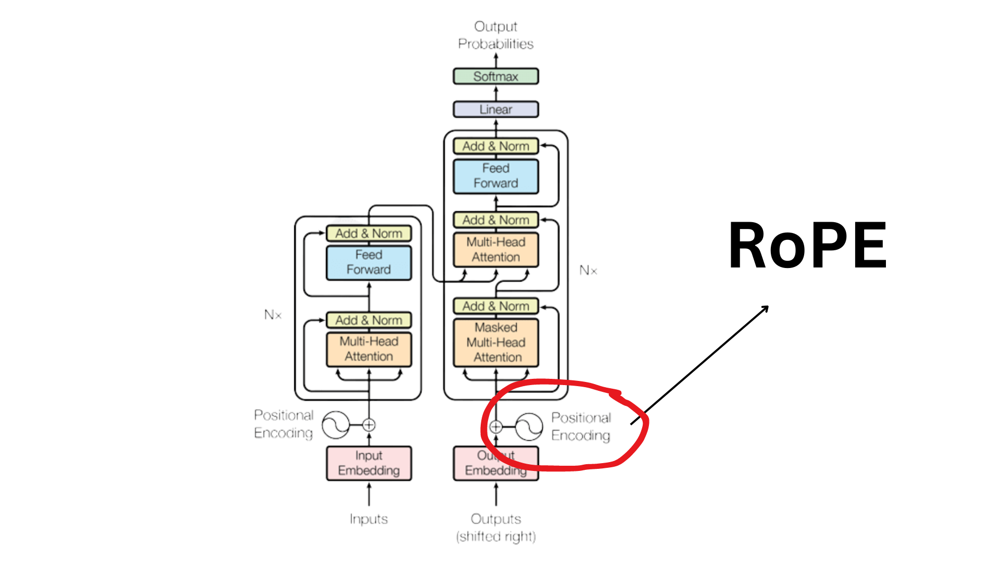
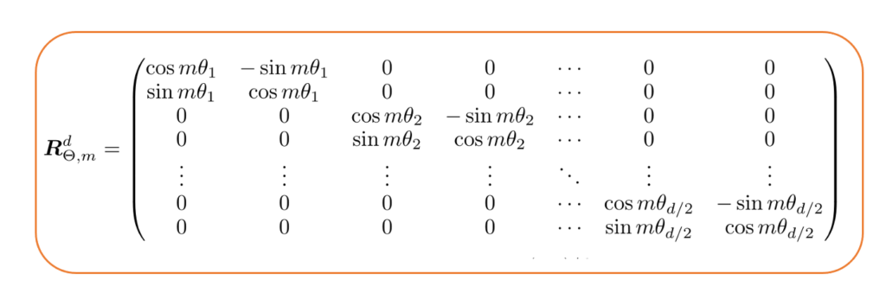
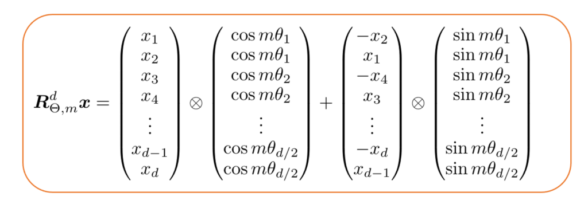

Transformer位置编码(2)——RoPE
第一部分：深入解析旋转位置编码（RoPE）
旋转位置编码（RoPE）代表了位置编码领域的一次范式转移，它通过一种新颖的几何视角统一了绝对位置编码和相对位置编码。自提出以来，RoPE因其优越的性能和良好的理论特性，迅速成为众多先进大语言模型（如Llama、PaLM、Qwen）的标准配置。

1.1 概念框架：通过旋转编码位置
RoPE的核心思想极其直观且优雅：它不再通过向量加法来注入位置信息，而是通过旋转查询（Q）和键（K）向量来实现。每个词元在序列中的绝对位置 $m$ 对应一个特定的旋转角度。当Q和K向量根据它们各自的绝对位置 $m$ 和 $n$ 进行旋转后，它们之间的点积（即注意力分数的核心部分）将只依赖于它们的相对位置 $m-n$。


我们可以借助一个“时钟”的比喻来理解这个过程：
- 多指针时钟：将一个 $d$ 维的嵌入向量看作由 $d/2$ 个二维平面上的指针（或复数）组成。每个指针代表一个维度对。
- 不同的转速：每个指针（维度对）都**以自己独特的速度（频率）**旋转。低维度的指针转得快，高维度的指针转得慢。
- 位置即角度：一个词元的绝对位置 $m$ 决定了所有指针需要旋转的角度。具体来说，第 $i$ 个指针的旋转角度是 $m \cdot \theta_i$，其中 $\theta_i$ 是该指针固有的转速。
- 相对位置的体现：当计算位置为 $m$ 的查询和位置为 $n$ 的键之间的注意力时，我们实际上是在比较这两个“时钟”状态。由于点积运算对旋转具有不变性（两个向量一起旋转相同的角度，它们的点积不变），最终的计算结果只取决于两个时钟指针之间的角度差，这个差值正比于相对距离 $m-n$。

这种多尺度的旋转机制是RoPE成功的关键。快速旋转的指针（低维，高频）能够精确地区分邻近的位置，为模型提供细粒度的局部信息。而缓慢旋转的指针（高维，低频）则能在很长的距离上保持独特的角度，从而为模型提供捕捉远距离依赖所需的粗粒度全局信息。这种设计避免了单一频率可能导致的“混叠”问题，即在某个周期后，不同位置的旋转状态变得无法区分。
1.2 数学公式与推导
为了严谨地理解RoPE，我们需要深入其数学推导。其目标是找到一个编码函数 $f(\mathbf{x}, m)$，它作用于词元嵌入 $\mathbf{x}$ 和其绝对位置 $m$，使得编码后的查询 $f(\mathbf{q}, m)$ 和键 $f(\mathbf{k}, n)$ 的内积只与 $\mathbf{q}$、$\mathbf{k}$ 以及它们的相对位置 $m-n$ 有关：
$$
\langle f(\mathbf{q}, m), f(\mathbf{k}, n) \rangle = g(\mathbf{q}, \mathbf{k}, m-n)
$$
最简洁的推导方式是借助复数。我们可以将一个 $d$ 维的实数向量 $\mathbf{x} \in \mathbb{R}^d$ 视为一个 $d/2$ 维的复数向量 $\mathbf{x} \in \mathbb{C}^{d/2}$，其中每两个连续的实数分量 $(x_{2i}, x_{2i+1})$ 组成一个复数 $x_i = x_{2i} + j \cdot x_{2i+1}$ 。
在复数域中，旋转可以通过乘以一个模为1的复数 $e^{j\theta}$ 来实现。我们定义编码函数为：
$$
f(\mathbf{x}, m) = \mathbf{x} \odot e^{jm\mathbf{\theta}}
$$
其中 $\odot$ 表示逐元素相乘，$\mathbf{\theta} = [\theta_1, \theta_2, \dots, \theta_{d/2}]$ 是一个包含不同旋转频率的向量。
现在，我们来计算编码后的查询和键的内积（在复数域中，内积定义为 $\langle a, b \rangle = a \cdot \bar{b}$，其中 $\bar{b}$ 是 $b$ 的共轭）：
$$
\begin{align*}
\langle f(\mathbf{q}, m), f(\mathbf{k}, n) \rangle
&= \operatorname{Re}\big( (\mathbf{q}\odot e^{jm\boldsymbol{\theta}})\cdot\overline{(\mathbf{k}\odot e^{jn\boldsymbol{\theta}})} \big) \
&= \operatorname{Re}\big( (\mathbf{q}\odot e^{jm\boldsymbol{\theta}})\cdot(\overline{\mathbf{k}}\odot e^{-jn\boldsymbol{\theta}}) \big) \
&= \operatorname{Re}\big( (\mathbf{q}\cdot\overline{\mathbf{k}})\odot e^{j(m-n)\boldsymbol{\theta}} \big)
\end{align*}
$$
从最后的结果可以看出，内积的表达式中只包含了相对位置 $m-n$，而绝对位置 $m$ 和 $n$ 被完美地消除了。
将这个思想转换回实数域，对于向量中的每一对维度 $(x_{2i}, x_{2i+1})$，上述复数乘法等价于乘以一个2D旋转矩阵：
$$
\begin{pmatrix} x’{2i} \ x’{2i+1} \end{pmatrix} =
\begin{pmatrix} \cos(m\theta_i) & -\sin(m\theta_i) \ \sin(m\theta_i) & \cos(m\theta_i) \end{pmatrix}
\begin{pmatrix} x_{2i} \ x_{2i+1} \end{pmatrix}
$$
对于整个 $d$ 维向量，这个操作相当于左乘一个块对角矩阵，其中每个对角块都是一个2D旋转矩阵。


旋转的频率 $\theta_i$ 通常按照以下公式定义：
$$
\theta_i = \text{base}^{-2(i-1)/d}
$$
其中 $d$ 是嵌入维度中用于RoPE的部分（通常是每个注意力头的维度），而 $\text{base}$ 是一个超参数，原始论文中设为10000。这个公式确保了频率 $\theta_i$ 随着维度索引 $i$ 的增加而几何递减，从而实现了前文所述的多尺度“时钟”效果。
1.3 RoPE的关键特性与理论优势
RoPE之所以被广泛采用，得益于其几个核心的理论优势：
- 序列长度的灵活性：由于RoPE在注意力计算中有效地编码了相对位置，它对序列长度具有很强的泛化能力。模型在较短序列上训练后，可以直接应用于更长的序列，而不会像某些绝对位置编码方法那样出现性能急剧下降的情况。
- 远程依赖的衰减特性：从数学上可以证明，经过RoPE旋转后的两个向量，它们的内积会随着相对距离 $|m-n|$ 的增大而衰减。这为模型提供了一个非常有用的归纳偏置：距离越近的词元通常关系越密切，注意力得分应该越高；反之，距离越远的词元关系可能越弱。
- 与线性注意力的兼容性：这是RoPE相较于传统RPE的一个决定性优势。因为RoPE是对Q和K向量的独立预处理，它发生在点积注意力计算之前。这意味着它与任何旨在避免计算完整注意力矩阵的线性注意力或高效注意力机制都是完全兼容的。这使得RoPE能够应用于对计算效率要求极高的超长序列模型中。
1.4 现代大语言模型中的RoPE分析：以Llama 3的rope_theta为例
理论的优雅需要通过实践来验证和优化。RoPE在现代大语言模型中的应用，特别是Llama 3系列模型的实现，为我们提供了一个绝佳的案例，展示了理论属性如何根据实际需求被调整。
在Llama 3的配置文件中，一个关键的超参数rope_theta被设置为500000.0，远大于原始RoPE论文中使用的10000.0。这个参数正是前文频率公式中的$\text{base}$项。
这一调整并非无心之举，它深刻地改变了RoPE的行为。增大rope_theta的值，会使得所有的旋转频率 $\theta_i$ 变小。换言之，它让所有维度的“时钟指针”都转得更慢了。其直接后果是，RoPE固有的“远程依赖衰减”特性被显著减弱。当旋转角度随位置增长得更慢时，即使相对距离 $|m-n|$ 很大，旋转带来的相位差也较小，从而使得内积（注意力分数）的衰减变得平缓。
这一改动背后的动机是显而易见的。随着大模型竞赛进入“长上下文”时代，模型需要处理越来越长的文档、代码库或对话历史。在这些场景下，相距非常遥远的两个词元之间可能存在着至关重要的联系（例如，“大海捞针”测试）。在这种情况下，RoPE原始的快速衰减特性反而成了一种阻碍，因为它会惩罚模型对远距离信息的关注。
因此，Llama 3的工程师们通过调整rope_theta这一简单的杠杆，有原则地修改了模型的归纳偏置，使其更适应长上下文推理的任务。这完美地说明了RoPE的特性既是其优点，也是一个可调节的参数。理论上被认为是“理想属性”的远程衰减，在新的应用需求下，可以被灵活地调整甚至抑制。这突显了在最先进的模型开发中，深刻的理论理解与务实的工程决策之间相辅相成的关系。
第二部分：将RoPE扩展至多模态环境
RoPE在处理一维文本序列方面取得了巨大成功，但真实世界的信息远不止于此。图像、视频等多模态数据具有更复杂的结构，这对位置编码提出了新的挑战。将RoPE从一维扩展到多维是构建像Qwen3-VL这样的高级视觉语言模型的关键一步。
2.1 多维度的挑战：从一维文本到二维视觉
文本本质上是一维序列，而图像是二维的空间结构，视频则是在二维空间基础上增加了第三个维度——时间。简单地将图像分割成块（patches）然后展平成一个一维序列，虽然是Vision Transformer（ViT）的初始做法，但这种方式会丢失关键的几何信息。模型将无法理解“上方”、“左侧”或“右下角”等基本的空间关系，这对于需要细粒度视觉理解的任务（如目标检测、文档布局分析）是致命的。
因此，一个适用于多模态数据的位置编码方案，必须能够同时处理多个坐标轴（例如，时间 $t$、高度 $h$、宽度 $w$），并让模型理解这些维度上的相对关系。
2.2 多模态RoPE（M-RoPE）：位置设计与频率分配
为了将RoPE扩展到多维，研究者们提出了多模态RoPE（M-RoPE）的概念。其核心思想是为每个维度（如 $t, h, w$）应用独立的旋转。然而，这一看似简单的扩展引入了两个关键且复杂的设计抉择：
- 位置设计（Position Design）：如何为文本和视觉（图像/视频帧）词元分配多维坐标 $(t, h, w)$。一个好的设计必须能够明确区分不同模态的词元，并避免位置歧义。例如，一些早期方案可能会导致视觉词元和后续生成的文本词元拥有重叠的坐标，造成“模态混淆”。
- 频率分配（Frequency Allocation）：如何将模型的嵌入维度（例如，一个注意力头的128维）分配给不同的坐标轴（$t, h, w$）来计算旋转。这是M-RoPE实现中最具挑战性也最关键的一环。
一种直接的频率分配策略是**“分块式”（Blocked）分配。例如，对于一个128维的向量，可以将前42维分配给时间轴 $t$，接下来的43维分配给高度轴 $h$，最后43维分配给宽度轴 $w$。每个轴在其分配到的维度块内，独立地应用从高到低的旋转频率。这种方法虽然简单，但存在严重缺陷：它迫使某些轴（在这个例子中是时间轴 $t$）只能使用高频旋转，而其他轴只能使用中低频旋转。高频旋转意味着注意力会随着距离的增加而迅速衰减，这对于需要捕捉长时序关系的视频理解任务是极其不利的。同时，不同轴使用不对称**的频率范围也可能引入不必要的偏见。
下表对比了不同的M-RoPE设计策略，系统地展示了它们各自的局限性，并为理解Qwen3-VL所采用的“交错式”方案的动机提供了背景。
| 设计变体 | 位置分配策略 | 频率分配策略 | 主要局限性 |
|---|---|---|---|
| 一维序列化 | 将所有词元展平为一维序列 | 所有维度用于单一轴 | 丢失2D/3D几何结构，空间推理能力差 |
| MRoPE (分块式) | 为视觉词元分配3D坐标 | 将嵌入维度分块分配给t, h, w轴 | 频率分配不均，导致某些轴（如时间）注意力快速衰减，不利于长时序建模 |
| VideoRoPE (对角线布局) | 对角线式分配位置ID | 将时间轴分配给低频维度 | 可能导致视觉和文本词元位置重叠，引发模态混淆 |
| Interleaved-MRoPE (交错式) | 为视觉词元分配3D坐标 | 将嵌入维度交错分配给t, h, w轴 | 解决了频率分配不均的问题，为所有轴提供全频谱频率覆盖 |
2.3 交错式RoPE变体：频率分配的范式转变

为了克服分块式分配的缺陷，一种更先进的策略——**“交错式”（Interleaved）**频率分配——被提出并应用于Qwen3-VL等模型中。
交错式分配的核心思想是，不再将连续的维度块分配给单个轴，而是在所有轴之间以轮询（round-robin）的方式交错分配维度。以一个三维坐标 $(t, h, w)$ 为例，分配方式可能如下：
- 维度对0分配给时间轴 $t$
- 维度对1分配给高度轴 $h$
- 维度对2分配给宽度轴 $w$
- 维度对3分配给时间轴 $t$
- 维度对4分配给高度轴 $h$
- … 以此类推
通过这种方式，每一个坐标轴（$t, h, w$）都能获得从最高到最低的完整频率谱。时间轴 $t$ 不再局限于高频维度，它同样可以使用低频维度来进行缓慢旋转，从而有效捕捉长距离的时间依赖。同理，空间轴 $h$ 和 $w$ 也能利用高频维度来感知局部细节，利用低频维度来理解全局布局。
这种方法从根本上解决了分块式分配导致的注意力快速衰减和不对称衰减的问题，为所有维度提供了均衡且鲁棒的多尺度建模能力。这种实现模式在一些底层算子库中也有体现，例如ONNX的RotaryEmbedding算子就提供了一个interleaved属性来支持这种计算模式，这表明它是一种被业界认可的高效实现方案。
第三部分：解构Qwen3-VL架构中的RoPE
本部分将综合前述所有理论知识，对目标模型Qwen3-VL中的RoPE实现进行一次集中的、深入的分析。我们将追溯其在Qwen系列中的演进，并详细剖析其“交错式M-RoPE”的具体实现及其对模型性能的深远影响。
3.1 Qwen-VL系列中位置编码的架构概览
Qwen（通义千问）系列模型在位置编码的选择上经历了一个清晰的演进过程，反映了该领域技术发展的趋势。早期的Qwen-VL模型，在其视觉-语言适配器中采用了二维绝对位置编码来保留图像特征的位置信息，这是一种相对传统和直接的方法。然而，随着模型向更复杂的时空理解能力发展，后续的模型版本，特别是Qwen2-VL和Qwen3-VL，转向了更先进的RoPE方案，并专门为其多模态特性设计了M-RoPE。这一转变标志着模型设计从简单的位置注入转向了通过几何变换来编码复杂的相对关系，旨在获得更强的泛化和外推能力。
3.2 Qwen3-VL中的交错式M-RoPE实现
Qwen3-VL模型架构的一项核心更新，被官方明确描述为**“增强的、采用交错式布局的MRoPE” (enhanced MRope with interleaved layout)** 和 “交错式MRoPE” (Interleaved-MRoPE)。这正是前面部分所讨论的先进频率分配方案。
Qwen团队在其技术博客中明确指出了做出这一改变的原因：他们识别出原始“分块式”MRoPE将所有时序信息集中在高频维度的缺陷，并采用交错式方案来实现**“跨越时间、高度和宽度的全频率覆盖”**。这一决策是经过深思熟虑的，旨在直接解决前代M-RoPE方案的瓶颈。
通过分析Qwen3-VL在Hugging Face等平台的官方代码库（例如modeling_qwen3_vl.py文件）和文档，我们可以进一步理解其实现细节。在代码层面，模型会为输入的视觉词元（来自图像或视频帧的patches）生成三维坐标 $(t, h, w)$。在应用RoPE时，查询和键向量的嵌入维度会根据交错模式被逻辑上地分配给这三个轴。对于一个给定的维度对，它会被指定用于旋转其中一个轴的坐标，而这个指定关系会在所有维度对上循环。最终，每个词元的Q和K向量会经历三次独立的旋转（分别由$t, h, w$坐标驱动），这些旋转效果叠加在一起，形成最终的位置编码。这种方式确保了模型在计算注意力时，能够同时、均衡地考虑所有维度上的相对位置关系。
3.3 实践意义与性能分析
Qwen3-VL采用交错式M-RoPE并非单纯的学术探索，而是由解决实际问题驱动的工程决策。官方文档和技术报告反复强调，这一特定的实现带来了**“更好的时空建模能力”和“增强的长时程视频推理能力”**。
这背后的因果联系是清晰且直接的：
- 提升长视频理解能力：通过确保时间轴 $t$ 能够使用低频旋转，模型的注意力不会随着视频时长的增加而过快衰减。这使得模型能够有效地关联视频开头和结尾的关键事件，从而在长达数小时的视频中实现精准的事件定位和内容理解。
- 增强空间推理能力：通过确保空间轴 $h$ 和 $w$ 也能访问完整的频率谱，模型获得了真正的多尺度空间感知能力。高频旋转使其能够关注图像中的精细纹理和微小物体（如文档中的字符），而低频旋转使其能够理解整体的布局和场景结构（如表格的行列关系）。
这种架构上的优化，直接转化为模型在各项基准测试和实际应用中的卓越表现。Qwen3-VL在复杂的长视频问答、文档解析和视觉定位等任务上的领先性能，很大程度上归功于其先进且经过精心设计的交错式M-RoPE机制。
总而言之，Qwen3-VL中交错式M-RoPE的应用，是复杂问题驱动架构演进的典范。它并非一项全新的发明，而是对现有技术（M-RoPE）的深刻理解和精巧改良。这反映出大模型研发已进入一个成熟阶段，性能的提升不再仅仅依赖于数据和参数规模的堆砌，更来自于对模型内部机制的深刻洞察和有针对性的架构优化。这个过程可以概括为：识别关键任务瓶颈（如长视频理解）-> 分析底层架构局限（如分块式M-RoPE的频率分配问题）-> 提出并实施针对性的解决方案（交错式分配）-> 实现模型能力的代际跃升。